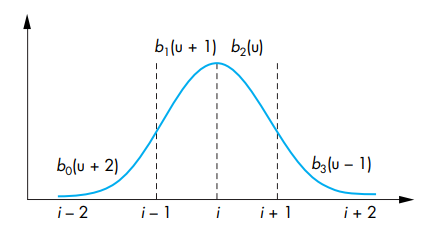

何为法律？永恒不变的理性，普适万物的规则。
# 曲线、曲面与多项式
对空间中的一条曲线或曲面，我们往往用参数方程来表示：
p(u)=⎝⎛x(u)y(u)z(u)⎠⎞p(u,v)=⎝⎛x(u,v)y(u,v)z(u,v)⎠⎞
我们往往认为u,v 是一个从 0 变化到 1 的实数标量，那么前者p(u) 是一条曲线，后者p(u,v) 是一个曲面。
然而这是一般情况。在实际应用中，相比于一般函数x(u),y(u),z(u)，我们更关心它们是多项式时的情况。参数方程改写为：
p(u)=k=0∑nukckp(u,v)=k=0∑nl=0∑mukvlck,l
其中ck,ck,l 都是三维的点或向量，严格来说c0 应为点，其余是向量。
# 插值
插值问题就是给出一组点p0,p1,...,pn，要求你构造一条曲线去经过这些点。实际中往往采用三次函数来插值，因为二次往往有些欠拟合，而更高次又增加了计算量，是一个经验的折中。
譬如给出四个点p0,p1,p2,p3，那么考虑先前的参数方程，一个要求是我们希望这四个点均匀地分布在曲线上，即：
⎩⎪⎪⎪⎪⎨⎪⎪⎪⎪⎧p(0)=p0p(1/3)=p1p(2/3)=p2p(1)=p3
这已经有四个约束了，写成矩阵形式:
⎝⎜⎜⎜⎛p0p1p2p3⎠⎟⎟⎟⎞=⎝⎜⎜⎜⎛11113132131232213133231⎠⎟⎟⎟⎞⎝⎜⎜⎜⎛c0c1c2c3⎠⎟⎟⎟⎞⇒p=Ac
然后我们就可以解出c=A−1p，然后就得到了参数化的曲线方程p(u)=uTc，其中uT=(1,u,u2,u3)。
再简化写一下，我们称b(u)=(A−1)Tu 为调和多项式 (blending polynomial)，那么就可以直接写出参数化曲线和四个点的关系：
p(u)=uTc=uTA−1p=b(u)Tp
讨论完曲线可以讨论三次插值曲面。譬如给出了 16 个点：
我们希望插值出一个三次曲面平均地通过它们，即：
p(3i,3j)=piji,j=0,1,2,3
记u=(1,u,u2,u3)T,v=(1,v,v2,v3)T，于是有：
p(u,v)=uTCv
其中，每个C 的元素Cij 都是一个三维向量。然后我们有 16 个约束函数p(i/3,j/3)=pij，写成矩阵就是：
AiCAjT=pij,i,j=0,1,2,3⇒ACAT=p
于是解得C=A−1p(AT)−1。所以：
p(u,v)=(uTA−1)p((AT)−1v)=b(u)Tpb(v)
然后讨论一下 Hermite 插值，相较于给出四个点（也就是四个约束），Hermite 插值给出了两个端点，以及两个端点的导数，即给出了p0,p1,p0′,p1′，同样也是四个约束。三次 Hermite 插值也是一个三次多项式，满足下列四个约束：
⎩⎪⎪⎪⎪⎨⎪⎪⎪⎪⎧p(0)=c0p(1)=c0+c1+c2+c3p′(0)=c1p′(1)=c1+2c2+3c3=p0=p1=p0′=p1′
这样也可以解方程，反解出c0,...,c3 即可。
# 参数连续性和几何连续性
考虑两个参数化的曲线p(u),q(v)，如果我们要它们接个头即p(1)=q(0)，然后可以考虑接头处的连续性：
C0:⎩⎪⎪⎨⎪⎪⎧xp(1)=xq(0)yp(1)=yq(0)zp(1)=zq(0)C1:⎩⎪⎪⎪⎪⎪⎪⎪⎪⎪⎨⎪⎪⎪⎪⎪⎪⎪⎪⎪⎧xp(1)=xq(0)yp(1)=yq(0)zp(1)=zq(0)xp′(1)=xq′(0)yp′(1)=yq′(0)zp′(1)=zq′(0)C2:...
看一下规律就是到是要求n 阶导数对应的参数完全相同。很显然要求的n 越大，则约束条件越多，需要的多项式次数也就越高。
G0:p(1)=αq(0)G1:{p(1)=αq(0)p′(1)=αq′(0)G2:...
看一下实际上会发现几何连续性比参数连续性实际上少了一个约束，即只需要连接处的微矢是共线的就好。特别地，G0 和C0 是等价的。
# 三次 Bezier 曲线和 Bezier 曲面
Bezier 曲线是一种特殊的 Hermite 曲线，他给出了四个点p0,p1,p2,p3 和如下约束：
⎩⎪⎪⎪⎪⎨⎪⎪⎪⎪⎧p(0)=c0p(1)=c0+c1+c2+c3p′(0)=c1p′(1)=c1+2c2+3c3=p0=p1=3p1−3p0=3p3−3p2
我们可以解得调和多项式：
b(u)=⎝⎜⎜⎜⎛(1−u)33u(1−u)23u2(1−u)u3⎠⎟⎟⎟⎞
于是p(u)=b(u)Tp。
同理推广到曲面的话，有p(u,v)=b(u)TPb(v)，其中Pij=pij。对于曲面，一次偏导∂u∂p(0,0)=3(p10−p00) 和 Bezier 曲线含义相同，但是二阶偏导∂u∂v∂2p 的数值其实反映了曲面的曲率，即弯曲程度。
很显然，点p(u,v) 的法向量为:∂u∂p×∂v∂p。
# 三次 B 样条曲线
三次 B 样条曲线给出了四个点p0,p1,p2,p3 和如下约束：
⎩⎪⎪⎪⎪⎨⎪⎪⎪⎪⎧p(0)=c0p(1)=c0+c1+c2+c3p′(0)=c1p′(1)=c1+2c2+3c3=61(p0+4p1+p2)=61(p1+4p2+p3)=21(p2−p0)=21(p3−p1)
解出来可得：
b(u)=61⎝⎜⎜⎜⎛(1−u)34−6u2+3u31+3u+3u2−3u3u3⎠⎟⎟⎟⎞,p(u)=b(u)Tp
这样做的话，使得曲线会被包裹在四个控制点的凸包内部。而且如果有一系列控制点p0,p1,...,pn，我们可以先用(p0,p1,p2,p3) 生成曲线，然后再用(p1,p2,p3,p4) 生成曲线，以此类推，这样的曲线具有较好的连续性。
对于一系列连续的控制点p0,p1,...,pn，我们单独考虑一个控制点pi，它为整条曲线做出的贡献只有四段：
(pi−3,pi−2,pi−1,pi)(pi−2,pi−1,pi,pi+1)(pi−1,pi,pi+1,pi+2)(pi,pi+1,pi+2,pi+3)
如果每一段的曲线参数u 都有一个单位区间，那么n−1 段曲线u 的范围就是[0,n−1]。pi 的贡献可以用一个函数来表示：
Bi(u)=⎩⎪⎪⎪⎪⎪⎪⎪⎪⎪⎨⎪⎪⎪⎪⎪⎪⎪⎪⎪⎧0b0(u+2)b1(u+1)b2(u)b3(u−1)0u<i−2i−2≤u<i−1i−1≤u<ii≤u<i+1i+1≤u<i+2u≥i+2
然后有：
p(u)=i=0∑nBi(u)pi
这样就不用一段一段计算，然后可能一个控制点要在四段中都要出现的麻烦情况了。
定性分析的话，可以看出一个控制点pi 对整条曲线的贡献函数：

显然就是曲线离控制点越近，受控制点影响越大。
当然，也可以推广到 B-Spline 曲面：
p(u,v)=i=0∑3j=0∑3bi(u)bj(v)pi,j
# 一般的 B-spline 曲线
现在考虑这样一个问题，给了一系列控制点p0,...,pm，我们想寻找一条曲线p(u),u∈[umin,umax]。使得这条曲线 "平滑、并且接近这些控制点"。假设我们有一系列u 的值，称为结点（knots）：
umin=u0≤u1≤...≤un=umax
然后我们就把整条曲线分成了n 段，每段为一个d 次多项式：
p(uk<u<uk+1)=j=0∑dcjkuj
类似先前的想法，与其去考虑求解cjk，我们直接关心每个控制点对曲线的贡献。即写成：
p(u)=i=0∑mBid(u)pi
其中，Bid(u) 表示它是一个d 次多项式。
实际上，B-spline 的含义就是 Basis Splines，而{Bid(u)} 就是一组 basis。尽管这样的 basis 有很多，但是最著名的一个应该是 Cox-deBoor recursion 定义的：
Bk0={10uk≤u<uk+1otherwiseBkd=uk+d−uku−ukBk,d−1(u)+uk+d+1−uk+1uk+d−uBk+1,d−1(u)
当d=0 时，每个控制点pi 只能影响一个区间[uk,uk+1]，实际上，每个控制点可以影响d+1 个区间，取决于 basis 的次数。我们可以画出 0 次、1 次、2 次的 basis 函数图像：
控制点pi 会影响区间：[ui,ui+1],[ui+1,ui+2],...,[ui+d,ui+d+1]。
这部分结点数n+1 和控制点数m+1 是没什么关系的，而且结点的选择也是自由的，这样的话就比较容易导致混乱。
所以实际中我们常常要求结点是等距选取的 (或重叠)，此时形成了 uniform B-spline。对于三次的 B-spline，我们常常取结点为：
{0,0,0,0,1,2,...,n−1,n,n,n,n}
而且由于一个控制点可以影响d+1 个区间，所以实际上控制点数m+1、区间数n、basis 多项式次数d 有以下关系：
n−(m+1)=d
至此，构造一个 B-spline 的方法比较完备了：
- 给出控制点p0,...,pm，以及多项式次数d。
- 选取结点{u0,...,ud+m+1}。
- 计算出 basis 多项式{Bid(u)}。
- 计算出曲线p(u)=∑i=0mBid(u)pi。
特别地，若结点为{0,0,0,0,1,1,1,1} 将退化成 Bezier 曲线。
此外，如果我们想特别地增加或减小某个控制点的影响力，也可以增加一个权重函数wi，生成的曲线为 Nonuniform rational B-spline( NURBS )：
p(u)=∑i=0mBid(u)wi∑i=0mBid(u)wipi
# Catmull-Rom Splines
如果我们放宽限制，不要求曲线必须在控制点的凸包内的话，Catmull-Rom spline 也是一种简单、受欢迎的方法。它给出的限制条件为：
⎩⎪⎪⎪⎪⎨⎪⎪⎪⎪⎧p(0)=c0p(1)=c0+c1+c2+c3p′(0)=c1p′(1)=c1+2c2+3c3=p1=p2=21(p2−p0)=21(p3−p1)
# 插值曲线的渲染
相较于直接去计算矩阵和多项式，有一种更为优雅的方式去渲染 Bezier 曲线。
对于四个控制点p0,p1,p2,p3 和曲线p(u),u∈[0,1]，我们可以考虑构造两条子曲线，即l(u),u∈[0,1] 和r(u),u∈[0,1]，分别对应原曲线[0,21],[21,1] 两部分。
构造方法也很简单，一图表示为：

如上图取得都是中点，然后l0,l1,l2,l3 和r0,r1,r2,r3 分别对应了左半边曲线的控制点和右半边曲线的控制点。这样我们就可以递归地分治去构造子曲线了，然后把它们首尾相连起来。
其实这样做法得正确性也很好证明，只需要验证 Bezier 曲线的约束，两条子曲线拼成的曲线和原曲线等价即可。注意参数缩减了一般。所以3(l1−l0) 才是p′(0)。